# Centos7下Azkaban搭建
# 介绍
[TOC]
安装环境：
system：CentOS7
azkaban:azkaban-3.73.1
# jdk安装
解压jdk包
tar -zvxf jdk-8u201-linux-x64.tar.gz1配置环境变量
#修改/etc下profile文件，加入以下配置并使用source /etc/profile命令使之生效 #Java export JAVA_HOME=/apps/jdk1.8.0_201 export CLASSPATH=.:$JAVA_HOME/jre/lib/rt.jar:$JAVA_HOME/lib/dt.jar:$JAVA_HOME/lib/tools.jar export PATH=$PATH:$JAVA_HOME/bin1
2
3
4
5
6
# git安装
安装命令
yum install git1查看版本
git --version1
# Azkaban 安装模式
Azkaban 有三种部署方式：单服务模式、2个服务模式、分布式多服务模式
solo server model（单服务模式）：该模式中 webServer 和 executorServer 运行在同一个进程中，进程名是AzkabanSingleServer。可以使用自带的H2数据库或者配置mysql数据。该模式适用于小规模的使用。此模式合适个人试用使用。它也可以用在小规模的使用案例中。
two server model（2个服务模式）：数据库为mysql，采用主从设置进行备份，管理服务器（webServer）和执行服务器（executorServer）在不同进程中运行，这种模式下，管理服务器和执行服务器互不影响。适用在较重的生成环境中。
multiple-executor（分布式多服务模式）：存放元数据的数据库为mysql，采用主从设置进行备份，管理服务器（webServer）和执行服务器（executorServer）在不同进程中运行。多个 Executor 模式为最重的生产环境。
# Azkaban单服务模式安装
解压azkaban包
tar -zvxf azkaban-3.73.1.tar.gz1编译源码
cd azkaban-3.73.1; ./gradlew build installDist1
2启动azkaban
执行如下命令
cd azkaban-solo-server/build/install/azkaban-solo-server; bin/start-solo.sh1
2
浏览器访问http://localhost:8081/
备注：运行时请到执行文件上一层进行运行，否则服务运行不起来。
# Azkaban多服务模式安装
# 4、安装步骤
# （1）上传安装包并解压缩到指定目录
[hadoop@hadoop3 ~]$ tar -zxvf azkaban-web-server-2.5.0.tar.gz -C apps/azkaban-2.5.0/
[hadoop@hadoop3 ~]$ tar -zxvf azkaban-executor-server-2.5.0.tar.gz -C apps/azkaban-2.5.0/
2
# （2）解压初始化脚本
[hadoop@hadoop3 ~]$ tar -zxvf azkaban-sql-script-2.5.0.tar.gz
[hadoop@hadoop3 ~]$ cd azkaban-2.5.0/
[hadoop@hadoop3 azkaban-2.5.0]$ ll
总用量 88
-rwxr-xr-x 1 hadoop hadoop 129 4月 22 2014 create.active_executing_flows.sql
-rwxr-xr-x 1 hadoop hadoop 216 4月 22 2014 create.active_sla.sql
-rwxr-xr-x 1 hadoop hadoop 4694 4月 22 2014 create-all-sql-2.5.0.sql
-rwxr-xr-x 1 hadoop hadoop 610 4月 22 2014 create.execution_flows.sql
-rwxr-xr-x 1 hadoop hadoop 519 4月 22 2014 create.execution_jobs.sql
-rwxr-xr-x 1 hadoop hadoop 358 4月 22 2014 create.execution_logs.sql
-rwxr-xr-x 1 hadoop hadoop 224 4月 22 2014 create.project_events.sql
-rwxr-xr-x 1 hadoop hadoop 227 4月 22 2014 create.project_files.sql
-rwxr-xr-x 1 hadoop hadoop 280 4月 22 2014 create.project_flows.sql
-rwxr-xr-x 1 hadoop hadoop 285 4月 22 2014 create.project_permissions.sql
-rwxr-xr-x 1 hadoop hadoop 294 4月 22 2014 create.project_properties.sql
-rwxr-xr-x 1 hadoop hadoop 380 4月 22 2014 create.projects.sql
-rwxr-xr-x 1 hadoop hadoop 325 4月 22 2014 create.project_versions.sql
-rwxr-xr-x 1 hadoop hadoop 155 4月 22 2014 create.properties.sql
-rwxr-xr-x 1 hadoop hadoop 498 4月 22 2014 create.schedules.sql
-rwxr-xr-x 1 hadoop hadoop 189 4月 22 2014 create.triggers.sql
-rwxr-xr-x 1 hadoop hadoop 22 4月 22 2014 database.properties
-rwxr-xr-x 1 hadoop hadoop 671 4月 22 2014 update-all-sql-2.1.sql
-rwxr-xr-x 1 hadoop hadoop 156 4月 22 2014 update-all-sql-2.2.sql
-rwxr-xr-x 1 hadoop hadoop 395 4月 22 2014 update.execution_logs.2.1.sql
-rwxr-xr-x 1 hadoop hadoop 59 4月 22 2014 update.project_properties.2.1.sql
[hadoop@hadoop3 azkaban-2.5.0]$
2
3
4
5
6
7
8
9
10
11
12
13
14
15
16
17
18
19
20
21
22
23
24
25
26
# （3）在MySQL中执行脚本create-all-sql-2.5.0.sql（在MySQL所在的服务器上执行）
mysql> create database azkaban;
Query OK, 1 row affected (0.01 sec)
mysql> use azkaban;
Database changed
mysql> source /home/hadoop/azkaban-2.5.0/create-all-sql-2.5.0.sql
2
3
4
5
6
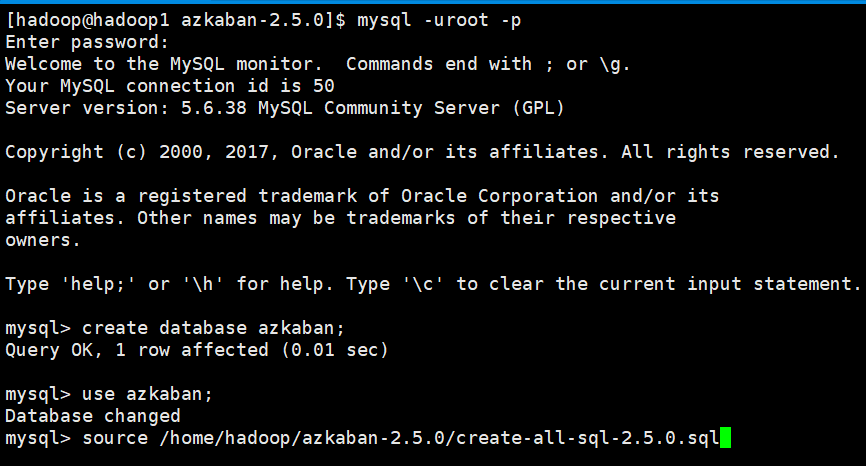
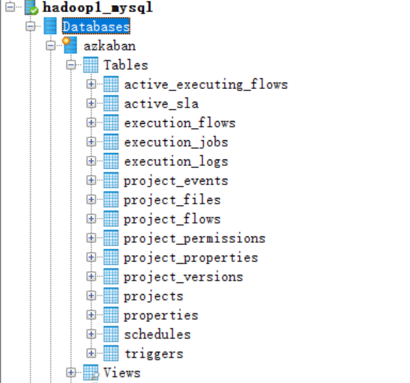
# （4）创建SSL配置
参考地址: http://docs.codehaus.org/display/JETTY/How+to+configure+SSL
最好是在 /home/hadoop/apps/azkaban-2.5.0 目录下： 执行命令: keytool -keystore keystore -alias jetty -genkey -keyalg RSA
[hadoop@hadoop3 azkaban-2.5.0]$ keytool -keystore keystore -alias jetty -genkey -keyalg RSA
输入密钥库口令:
再次输入新口令:
您的名字与姓氏是什么?
[Unknown]:
您的组织单位名称是什么?
[Unknown]:
您的组织名称是什么?
[Unknown]:
您所在的城市或区域名称是什么?
[Unknown]:
您所在的省/市/自治区名称是什么?
[Unknown]:
该单位的双字母国家/地区代码是什么?
[Unknown]: CN
CN=Unknown, OU=Unknown, O=Unknown, L=Unknown, ST=Unknown, C=CN是否正确?
[否]: 是
输入 <jetty> 的密钥口令
(如果和密钥库口令相同, 按回车):
[hadoop@hadoop3 azkaban-2.5.0]$
2
3
4
5
6
7
8
9
10
11
12
13
14
15
16
17
18
19
20
21
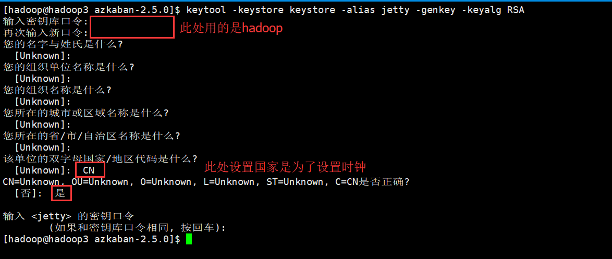
完成上述工作后,将在当前目录生成 keystore 证书文件,将 keystore 拷贝到 azkaban web 服务 器根目录中.如:
hadoop@hadoop3 azkaban-2.5.0]$ mv keystore azkaban-web-2.5.0/
# （5）修改时区
注：先配置好服务器节点上的时区
1、先生成时区配置文件 Asia/Shanghai，用交互式命令 tzselect 即可
2、拷贝该时区文件，覆盖系统本地时区配置
[hadoop@hadoop3 azkaban-2.5.0]$ sudo cp /usr/share/zoneinfo/Asia/Shanghai /etc/localtime
# （6）修改azkaban web 服务器配置
进入 azkaban web 服务器安装目录 conf 目录
[hadoop@hadoop3 ~]$ cd apps/azkaban-2.5.0/azkaban-web-2.5.0/conf/
修改 azkaban.properties 文件
[hadoop@hadoop3 conf]$ vi azkaban.properties
内容说明如下：
#Azkaban Personalization Settings
azkaban.name=MyTestAzkaban #服务器 UI 名称,用于服务器上方显示的名字
azkaban.label=My Local Azkaban #描述
azkaban.color=#FF3601 #UI 颜色
azkaban.default.servlet.path=/index
web.resource.dir=/home/hadoop/apps/azkaban-2.5.0/azkaban-web-2.5.0/web/ #默认根 web 目录
default.timezone.id=Asia/Shanghai #默认时区,已改为亚洲/上海 默认为美国
#Azkaban UserManager class
user.manager.class=azkaban.user.XmlUserManager #用户权限管理默认类
user.manager.xml.file=/home/hadoop/apps/azkaban-2.5.0/azkaban-web-2.5.0/conf/azkaban-users.xml #用户配置,具体配置参加下文
#Loader for projects # global 配置文件所在位置
executor.global.properties=/home/hadoop/apps/azkaban-2.5.0/azkaban-executor-2.5.0/conf/global.properties
azkaban.project.dir=projects
database.type=mysql #数据库类型
mysql.port=3306 #端口号
mysql.host=hadoop03 #数据库连接 IP
mysql.database=azkaban #数据库实例名
mysql.user=root #数据库用户名
mysql.password=root #数据库密码
mysql.numconnections=100 #最大连接数
# Velocity dev mode
velocity.dev.mode=false # Jetty 服务器属性.
jetty.maxThreads=25 #最大线程数
jetty.ssl.port=8443 #Jetty SSL 端口
jetty.port=8081 #Jetty 端口
jetty.keystore=/home/hadoop/apps/azkaban-2.5.0/azkaban-web-2.5.0/keystore #SSL 文件名
jetty.password=hadoop #SSL 文件密码
jetty.keypassword=hadoop #Jetty 主密码 与 keystore 文件相同
jetty.truststore=/home/hadoop/apps/azkaban-2.5.0/azkaban-web-2.5.0/keystore #SSL 文件名
jetty.trustpassword=hadoop # SSL 文件密码
# 执行服务器属性
executor.port=12321 #执行服务器端口
# 邮件设置(可选项)
mail.sender=xxxxxxxx@163.com #发送邮箱
mail.host=smtp.163.com #发送邮箱 smtp 地址
mail.user=xxxxxxxx #发送邮件时显示的名称
mail.password=********** #邮箱密码
job.failure.email=xxxxxxxx@163.com #任务失败时发送邮件的地址
job.success.email=xxxxxxxx@163.com #任务成功时发送邮件的地址
lockdown.create.projects=false # cache.directory=cache #缓存目录
修改 azkaban-users.xml配置文件
用户配置 进入 azkaban web 服务器 conf 目录,修改 azkaban-users.xml vi azkaban-users.xml 增加 管理员用户
<azkaban-users>
<user username="azkaban" password="azkaban" roles="admin" groups="azkaban" />
<user username="metrics" password="metrics" roles="metrics"/>
<user username="admin" password="admin" roles="admin,metrics" />
<role name="admin" permissions="ADMIN" />
<role name="metrics" permissions="METRICS"/>
</azkaban-users>
2
3
4
5
6
7
# （6）修改azkaban executor服务器配置
进入 azkaban executor 服务器安装目录 conf 目录
[hadoop@hadoop3 ~]$ cd apps/azkaban-2.5.0/azkaban-executor-2.5.0/conf/
修改azkaban.properties文件
[hadoop@hadoop3 conf]$ vi azkaban.properties
#Azkaban
default.timezone.id=Asia/Shanghai #时区
# Azkaban JobTypes 插件配置，插件所在位置
azkaban.jobtype.plugin.dir=/home/hadoop/apps/azkaban-2.5.0/azkaban-executor-2.5.0/plugins/jobtypes
#Loader for projects
executor.global.properties=/home/hadoop/apps/azkaban-2.5.0/azkaban-executor-2.5.0/conf/global.properties
azkaban.project.dir=projects
#数据库设置
database.type=mysql #数据库类型(目前只支持 mysql)
mysql.port=3306 #数据库端口号
mysql.host=hadoop03 #数据库 IP 地址
mysql.database=azkaban #数据库实例名
mysql.user=root #数据库用户名
mysql.password=root #数据库密码
mysql.numconnections=100 #最大连接数
# 执行服务器配置
executor.maxThreads=50 #最大线程数
executor.port=12321 #端口号(如修改,请与 web 服务中一致)
executor.flow.threads=30 #线程数
# （7）配置环境变量
[hadoop@hadoop3 ~]$ vi .bashrc
#Azkban
export AZKABAN_WEB_HOME=/home/hadoop/apps/azkaban-2.5.0/azkaban-web-2.5.0
export AZKABAN_EXE_HOME=/home/hadoop/apps/azkaban-2.5.0/azkaban-executor-2.5.0
export PATH=$PATH:$AZKABAN_WEB_HOME/bin:$AZKABAN_EXE_HOME/bin
2
3
4
5
保存之后使其立即生效
[hadoop@hadoop3 ~]$ source .bashrc
# 5、启动
# （1）启动 web 服务器
[hadoop@hadoop3 ~]$ azkaban-web-start.sh
后台启动方式
nohup azkaban-web-start.sh 1>/home/hadoop/azwebstd.out 2>/home/hadoop/azweberr.out &
报错信息：
Exception in thread "main" java.lang.NoClassDefFoundError: Could not initialize class org.apache.derby.jdbc.AutoloadedDriver40
at java.lang.Class.forName0(Native Method)
at java.lang.Class.forName(Class.java:348)
at java.sql.DriverManager.isDriverAllowed(DriverManager.java:556)
at java.sql.DriverManager.isDriverAllowed(DriverManager.java:548)
at java.sql.DriverManager.getDrivers(DriverManager.java:446)
at org.apache.commons.dbcp.BasicDataSource.<clinit>(BasicDataSource.java:57)
at azkaban.database.DataSourceUtils.getMySQLDataSource(DataSourceUtils.java:98)
at azkaban.database.DataSourceUtils.getDataSource(DataSourceUtils.java:76)
at azkaban.database.AbstractJdbcLoader.<init>(AbstractJdbcLoader.java:63)
at azkaban.executor.JdbcExecutorLoader.<init>(JdbcExecutorLoader.java:59)
at azkaban.webapp.AzkabanWebServer.loadExecutorManager(AzkabanWebServer.java:247)
at azkaban.webapp.AzkabanWebServer.<init>(AzkabanWebServer.java:185)
at azkaban.webapp.AzkabanWebServer.main(AzkabanWebServer.java:726)
2
3
4
5
6
7
8
9
10
11
12
13
14
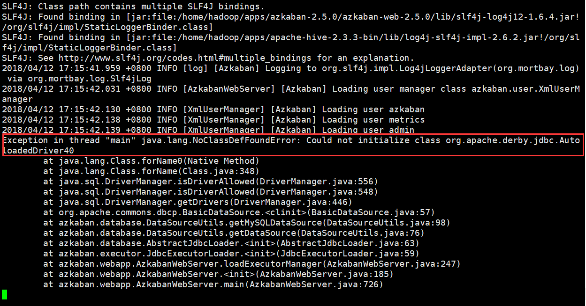
需要将derby-10.11.1.1.jar放到/home/hadoop/apps/azkaban-2.5.0/azkaban-web-2.5.0/lib和/home/hadoop/apps/azkaban-2.5.0/azkaban-executor-2.5.0/lib目录中
[hadoop@hadoop3 ~]$ cp derby-10.11.1.1.jar apps/azkaban-2.5.0/azkaban-web-2.5.0/lib/
[hadoop@hadoop3 ~]$ cp derby-10.11.1.1.jar apps/azkaban-2.5.0/azkaban-executor-2.5.0/lib/
2
此时在重新启动azkaban仍旧报错
Exception in thread "main" java.lang.IllegalArgumentException: The datetime zone id 'Asia/Shanghai ' is not recognised
at org.joda.time.DateTimeZone.forID(DateTimeZone.java:223)
at azkaban.webapp.AzkabanWebServer.<init>(AzkabanWebServer.java:208)
at azkaban.webapp.AzkabanWebServer.main(AzkabanWebServer.java:726)
2
3
4
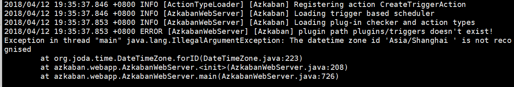
排查发现是Azkaban的配置文件azkaban-web-2.5.0/conf/azkaban.properties中的时区配置后面多了一个空格导致
注意：Azkaban的配置文件中不能有空格
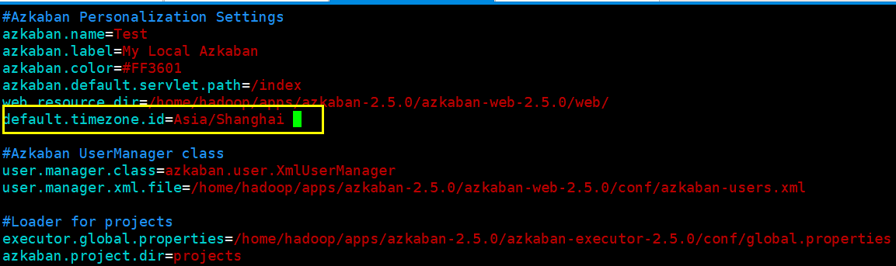
去掉空格之后再次启动azkaban，启动成功
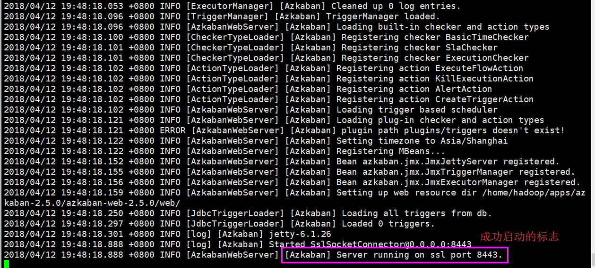
# （2）启动executor服务器
[hadoop@hadoop3 ~]$ azkaban-executor-start.sh
后台启动方式
nohup azkaban-executor-start.sh 1>/home/hadoop/azexstd.out 2>/home/hadoop/azexerr.out &
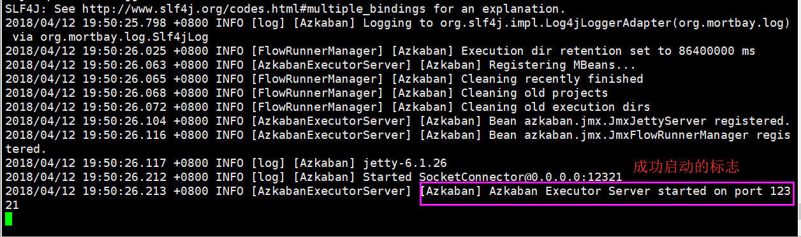
# 6、验证
打开谷歌或是火狐浏览器输入https://IP:8443，此处测试的地址是https://hadoop3:8443，此时可能会出现以下界面，点击高级
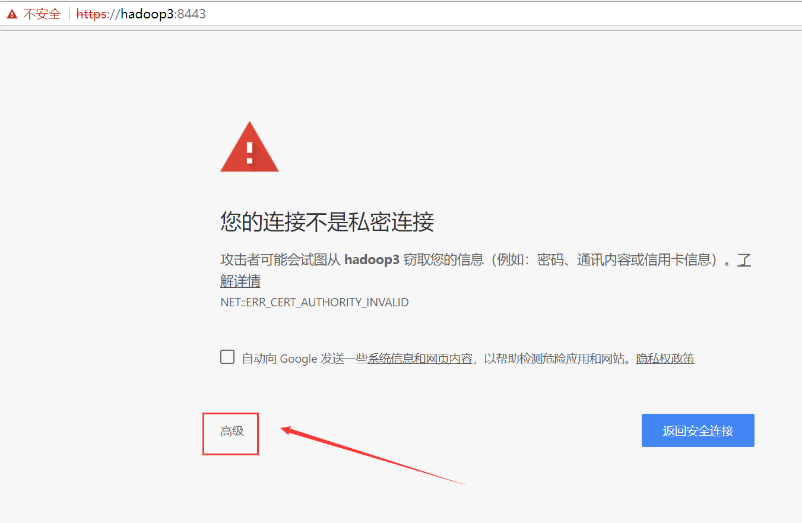
点击继续前往hadoop3（不安全）
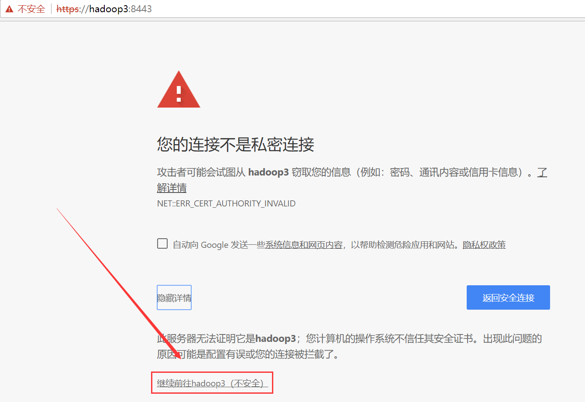
此时会跳到登录界面，输入在配置文件azkaban-users.xml，中配置的用户名密码admin/admin，点击登录
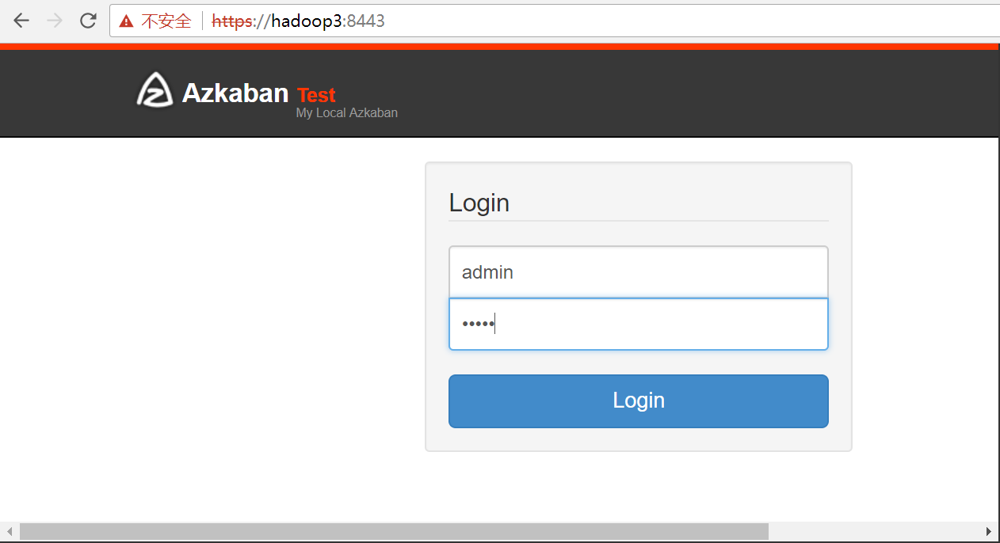
登录成功
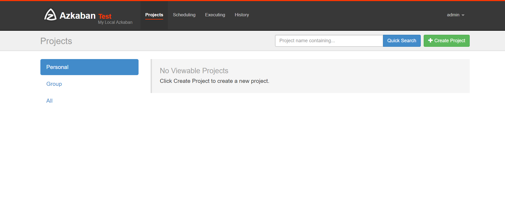